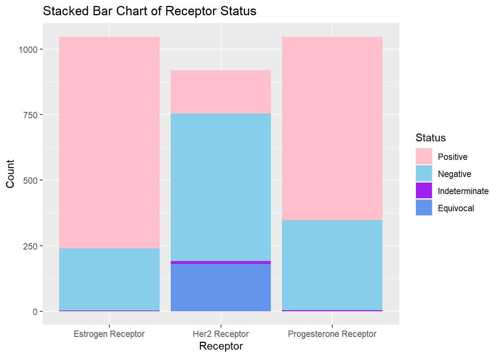
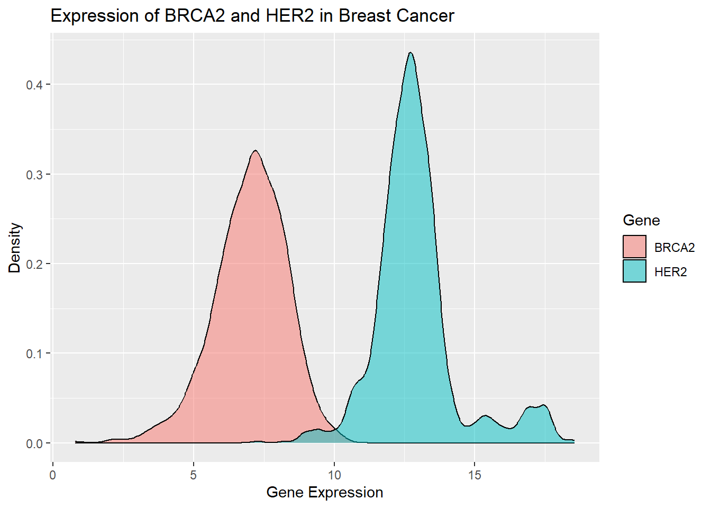
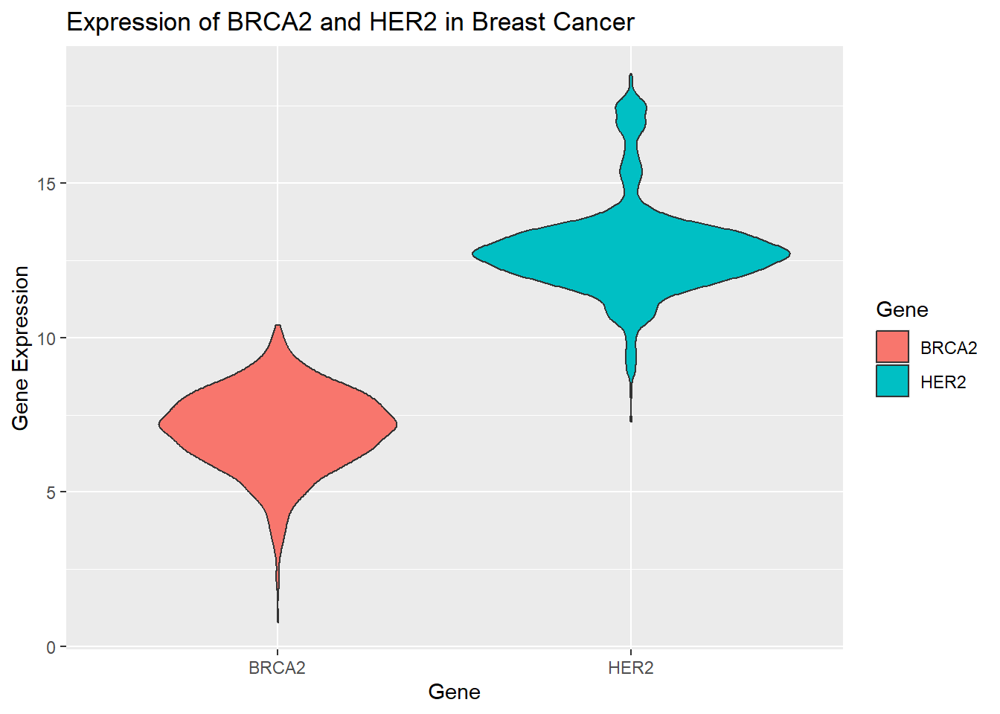
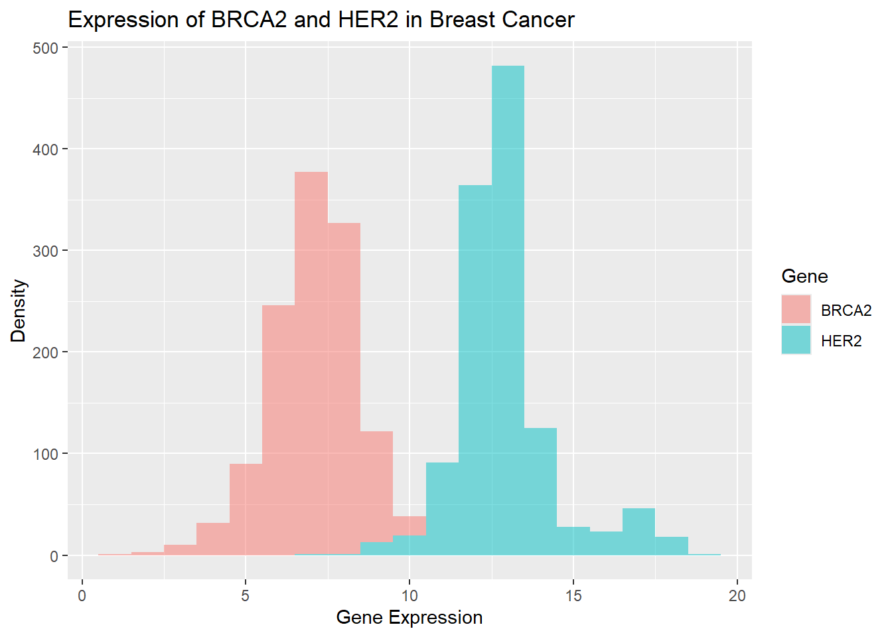
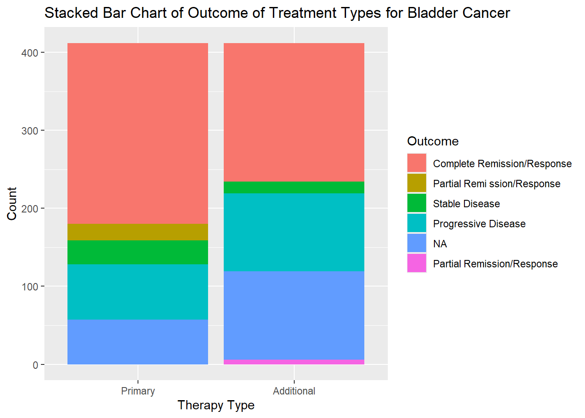
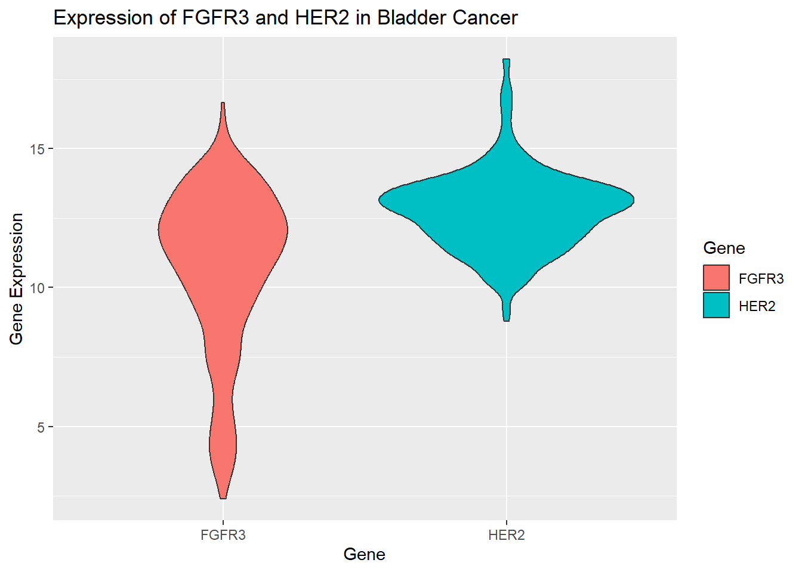
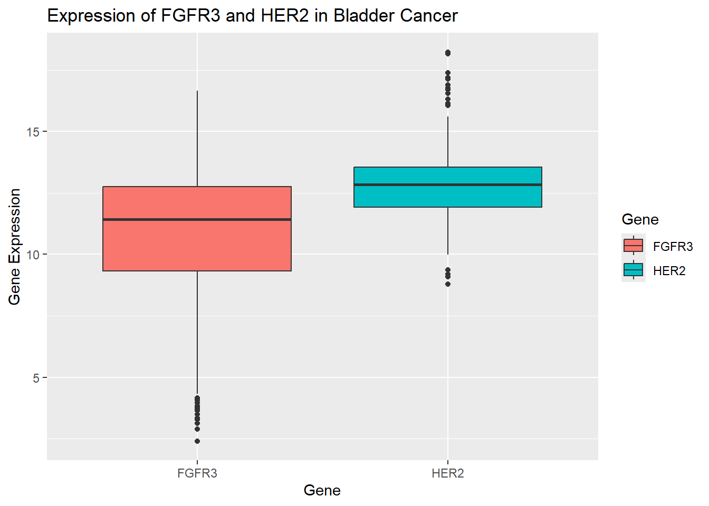
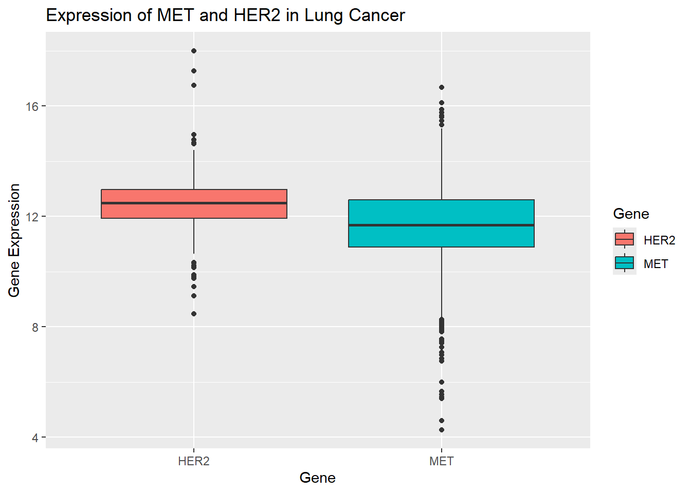

# A tibble: 12 × 2
Stage count
<chr> <int>
1 stage i 90
2 stage ia 86
3 stage ib 7
4 stage ii 6
5 stage iia 358
6 stage iib 258
7 stage iii 2
8 stage iiia 156
9 stage iiib 27
10 stage iiic 65
11 stage iv 20
12 stage x 14
test
library(plotly)
Attaching package: 'plotly'
The following object is masked from 'package:httr':
config
The following object is masked from 'package:ggplot2':
last_plot
The following object is masked from 'package:stats':
filter
The following object is masked from 'package:graphics':
layout
# Plotly pie chartplot_ly(cancer_data1 |>drop_na(Stage_Condensed) |>group_by(Stage_Condensed) |>summarize(count =n()), labels =~Stage_Condensed, values =~count, type ="pie") %>%layout(title ="Interactive Pie Chart of Cancer Stage Distriubtion in Breast Cancer",legend =list(orientation ="h"))
# A tibble: 2,194 × 2
Therapy Received
<chr> <fct>
1 Radiation_Therapy Yes
2 Targeted_Molecular_Therapy Yes
3 Radiation_Therapy No
4 Targeted_Molecular_Therapy No
5 Radiation_Therapy Yes
6 Targeted_Molecular_Therapy NA
7 Radiation_Therapy Yes
8 Targeted_Molecular_Therapy NA
9 Radiation_Therapy Yes
10 Targeted_Molecular_Therapy Yes
# ℹ 2,184 more rows
g <-ggplot(cancer_data1_long1, aes(x = Therapy, fill = Received))g +geom_bar() +labs(x ="Treatment Therapy", y ="Count", title ="Stacked Bar Chart of Administered Treatments for Breast Cancer") +scale_x_discrete(labels =c("Radiation_Therapy"="Radiation Therapy", "Targeted_Molecular_Therapy"="Targeted Molecular Therapy")) +labs(fill ="Treatment Received")
g <-ggplot(cancer_data1_long2, aes(x = Receptor, fill = Status))g +geom_bar() +labs(x ="Receptor", y ="Count", title ="Stacked Bar Chart of Receptor Status") +scale_x_discrete(labels =c("Estrogen_Receptor_Status"="Estrogen Receptor", "Progesterone_Receptor_Status"="Progesterone Receptor", "Her2_Receptor_Status"="Her2 Receptor")) +scale_fill_manual(values =c("Positive"="pink","Negative"="skyblue","Indeterminate"="purple","Equivocal"="cornflowerblue" ))

above plot faceted
g <-ggplot(cancer_data1_long2, aes(x = Receptor, fill = Status))g +geom_bar(position ="dodge") +labs(x ="Receptor", y ="Count", title ="Stacked Bar Chart of Receptor Status") +scale_x_discrete(labels =c("Estrogen_Receptor_Status"="Estrogen Receptor", "Progesterone_Receptor_Status"="Progesterone Receptor", "Her2_Receptor_Status"="Her2 Receptor")) +scale_fill_manual(values =c("Positive"="pink","Negative"="skyblue","Indeterminate"="purple","Equivocal"="cornflowerblue" ))
# A tibble: 9 × 5
Age_Grouping Receptor_Type count total_count Proportion
<fct> <chr> <int> <int> <dbl>
1 Young Estrogen_Receptor_Status 51 106 0.481
2 Young Her2_Receptor_Status 10 106 0.0943
3 Young Progesterone_Receptor_Status 45 106 0.425
4 Middle Age Estrogen_Receptor_Status 481 995 0.483
5 Middle Age Her2_Receptor_Status 95 995 0.0955
6 Middle Age Progesterone_Receptor_Status 419 995 0.421
7 Old Estrogen_Receptor_Status 276 570 0.484
8 Old Her2_Receptor_Status 59 570 0.104
9 Old Progesterone_Receptor_Status 235 570 0.412
g <-ggplot(cancer_data1_long3, aes(x = Age_Grouping, y = Proportion, fill = Receptor_Type))g +geom_bar(stat ="identity") +labs(x ="Age Group", y ="Proportion",title ="Stacked Bar Chart of Positive Receptor Status by Age") +scale_fill_manual(values =c("Estrogen_Receptor_Status"="pink","Progesterone_Receptor_Status"="skyblue","Her2_Receptor_Status"="cornflowerblue" ),labels =c("Estrogen_Receptor_Status"="Estrogen Positive" ,"Progesterone_Receptor_Status"="Progesterone Positive","Her2_Receptor_Status"="Her2 Positive")) +labs(fill ="Receptor")

test
faceted plot of Positive Receptor Status by Age
g <-ggplot(cancer_data1_long3, aes(x = Age_Grouping, y = Proportion, fill = Receptor_Type))g +geom_bar(stat ="identity", position ="dodge") +labs(x ="Age Group", y ="Proportion",title ="Stacked Bar Chart of Positive Receptor Status by Age") +scale_fill_manual(values =c("Estrogen_Receptor_Status"="pink","Progesterone_Receptor_Status"="skyblue","Her2_Receptor_Status"="cornflowerblue" ),labels =c("Estrogen_Receptor_Status"="Estrogen Positive" ,"Progesterone_Receptor_Status"="Progesterone Positive","Her2_Receptor_Status"="Her2 Positive")) +labs(fill ="Receptor Status")
g <-ggplot(cancer_data2, aes(x = Gene_Expression))g +geom_density(alpha =0.5, aes(fill = Gene)) +labs(x ="Gene Expression", y ="Density", title ="Expression of BRCA2 and HER2 in Breast Cancer")

#histogram of breast cancer gene expression
g <-ggplot(cancer_data2, aes(x = Gene_Expression))g +geom_histogram(alpha =0.5, binwidth =1, aes(fill = Gene)) +labs(x ="Gene Expression", y ="Density", title ="Expression of BRCA2 and HER2 in Breast Cancer")

box plot of breast cancer gene expression
g <-ggplot(cancer_data2)g +geom_boxplot(aes(x = Gene, y = Gene_Expression, fill = Gene)) +labs(x ="Gene", y ="Gene Expression", title ="Expression of BRCA2 and HER2 in Breast Cancer")
violin plot
g <-ggplot(cancer_data2)g +geom_violin(aes(x = Gene, y = Gene_Expression, fill = Gene)) +labs(x ="Gene", y ="Gene Expression", title ="Expression of BRCA2 and HER2 in Breast Cancer")
g <-ggplot(cancer_data3_long1, aes(x = Therapy, fill = Outcome))g +geom_bar() +labs(x ="Therapy Type", y ="Count", title ="Stacked Bar Chart of Outcome of Treatment Types for Bladder Cancer") +scale_x_discrete(labels =c("Primary_Therapy_Outcome"="Primary","Additional_Treatment_Outcome"="Additional"))

cancer stage by age
g <-ggplot(cancer_data3 |>group_by(Age_Grouping, Stage) |>drop_na(Stage), aes(x = Age_Grouping, fill = Stage))g +geom_bar() +labs(x ="Age Group", y ="Count",title ="Stacked Bar Chart of Cancer Stage by Age Group in Bladder Cancer") +scale_fill_manual(values =c("stage i"="pink","stage ii"="skyblue","stage iii"="cornflowerblue","stage iv"="purple" ),labels =c("stage i"="I" ,"stage ii"="II","stage iii"="III","stage iv"="V")) +labs(fill ="Stage")
g <-ggplot(cancer_data4, aes(x = Gene_Expression))g +geom_density(alpha =0.5, aes(fill = Gene)) +labs(x ="Gene Expression", y ="Density", title ="Expression of FGFR3 and HER2 in Bladder Cancer")

BLCA box plot
g <-ggplot(cancer_data4)g +geom_boxplot(aes(x = Gene, y = Gene_Expression, fill = Gene)) +labs(x ="Gene", y ="Gene Expression", title ="Expression of FGFR3 and HER2 in Bladder Cancer")

BLCA violin plot
g <-ggplot(cancer_data4)g +geom_violin(aes(x = Gene, y = Gene_Expression, fill = Gene)) +labs(x ="Gene", y ="Gene Expression", title ="Expression of FGFR3 and HER2 in Bladder Cancer")
# A tibble: 946 × 2
Therapy Received
<chr> <fct>
1 Radiation_Therapy No
2 Targeted_Molecular_Therapy Yes
3 Radiation_Therapy No
4 Targeted_Molecular_Therapy Yes
5 Radiation_Therapy No
6 Targeted_Molecular_Therapy No
7 Radiation_Therapy No
8 Targeted_Molecular_Therapy No
9 Radiation_Therapy No
10 Targeted_Molecular_Therapy Yes
# ℹ 936 more rows
g <-ggplot(cancer_data5_long5, aes(x = Therapy, fill = Received))g +geom_bar() +labs(x ="Treatment Therapy", y ="Count", title ="Stacked Bar Chart of Administered Treatments for Lung Cancer") +scale_x_discrete(labels =c("Radiation_Therapy"="Radiation Therapy", "Targeted_Molecular_Therapy"="Targeted Molecular Therapy"))

Therapy Outcome
g <-ggplot(cancer_data5 |>drop_na(Primary_Therapy_Outcome), aes(x = Primary_Therapy_Outcome, fill = Primary_Therapy_Outcome))g +geom_bar() +labs(x ="Outcome", y ="Count", title ="Bar Chart of Primary Therapy Outcome for Lung Cancer") +labs(fill ="Outcome") +coord_flip()
g <-ggplot(cancer_data6, aes(x = Gene_Expression))g +geom_density(alpha =0.5, aes(fill = Gene)) +labs(x ="Gene Expression", y ="Density", title ="Expression of MET and HER2 in Lung Cancer")
box plot of lung cancer gene expression
g <-ggplot(cancer_data6)g +geom_boxplot(aes(x = Gene, y = Gene_Expression, fill = Gene)) +labs(x ="Gene", y ="Gene Expression", title ="Expression of MET and HER2 in Lung Cancer")
violin plot
g <-ggplot(cancer_data6)g +geom_violin(aes(x = Gene, y = Gene_Expression, fill = Gene)) +labs(x ="Gene", y ="Gene Expression", title ="Expression of MET and HER2 in Lung Cancer")
# A tibble: 1,084 × 9
uniquePatientKey patientId CANCER_TYPE CANCER_TYPE_DETAILED
<chr> <chr> <chr> <chr>
1 VENHQS0zQy1BQUFVOmJyY2FfdGNnYV9wY… TCGA-3C-… Breast Can… Breast Invasive Lob…
2 VENHQS0zQy1BQUxJOmJyY2FfdGNnYV9wY… TCGA-3C-… Breast Can… Breast Invasive Duc…
3 VENHQS0zQy1BQUxKOmJyY2FfdGNnYV9wY… TCGA-3C-… Breast Can… Breast Invasive Duc…
4 VENHQS0zQy1BQUxLOmJyY2FfdGNnYV9wY… TCGA-3C-… Breast Can… Breast Invasive Duc…
5 VENHQS00SC1BQUFLOmJyY2FfdGNnYV9wY… TCGA-4H-… Breast Can… Breast Invasive Lob…
6 VENHQS01TC1BQVQwOmJyY2FfdGNnYV9wY… TCGA-5L-… Breast Can… Breast Invasive Lob…
7 VENHQS01VC1BOVFBOmJyY2FfdGNnYV9wY… TCGA-5T-… Breast Can… Breast Invasive Car…
8 VENHQS1BMS1BMFNCOmJyY2FfdGNnYV9wY… TCGA-A1-… Breast Can… Breast Invasive Car…
9 VENHQS1BMS1BMFNEOmJyY2FfdGNnYV9wY… TCGA-A1-… Breast Can… Breast Invasive Duc…
10 VENHQS1BMS1BMFNFOmJyY2FfdGNnYV9wY… TCGA-A1-… Breast Can… Breast Invasive Car…
# ℹ 1,074 more rows
# ℹ 5 more variables: FRACTION_GENOME_ALTERED <chr>, MSI_SCORE_MANTIS <chr>,
# MUTATION_COUNT <chr>, TUMOR_TYPE <chr>, TMB_NONSYNONYMOUS <chr>